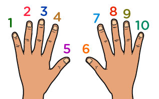
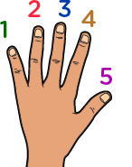
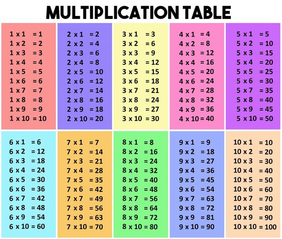
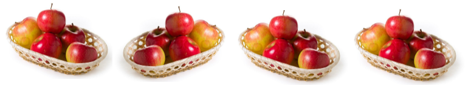

Why 2 x 2 is not 5 and why this "x" is called "times" and why does every parent in our childhood wanted us to learn tables?
We will all learn this by doing a simple task, by counting the total number of hands in the picture.
So this is one way of counting stuff, but it's not the fastest, and this type of counting is done by people who don't know about multiplication, so let's see what is the best way of doing it.
Our surrounding is made of a lot of collections and groups, including both man-made and natural, thus you can easily spot groups around yourself like in your classroom, parking lot, on streets, etc and once you identify groups around yourself, it is simple to count from there. Let's see how:
As in the above example, we can spot a pair of hands for every kid so instead of counting hands we could count the total number of kids and multiply it by 2.
total number of kids multiply by 2
8 multiply by 2
8 Groups of 2
8 x 2
2 + 2 + 2 + 2 + 2 + 2 + 2 + 2
16
But wait how this method is faster than the normal counting, we still had to add 2, eight times. It isn't right now but stay with us for more examples then you will understand how it is faster.
Ok, let's count all the fingers this time instead of hands, So it will go like 1,2.......9,10,11,12......19,20,21,22......80.
Again it wasn't the smartest way, as we can find groups within those, like everyone have 10 fingers and there are 8 of the people there so the total number of fingers will be 10 multiplied by 8 i.e 80.
8 multiply by 10
8 Groups of 10
8 x 10
10 + 10 + 10 + 10 + 10 + 10 + 10 + 10
80
Or one more way is to count the fingers of just one hand i.e 5 and multiply with the 8 people and then multiply the whole thing with 2 as everyone has two hands.
 x Total people x Total hands
5 x 8 x 2
(5 + 5 + 5 + 5 + 5 + 5 + 5 + 5) x 2
40 x 2
40 + 40
80
And still adding 10 and 4, eight times is not faster, Let's see one more example, and then we will talk about how can we make it faster.
This is one regular way to count but a better way to count is by groups and subgroups as we have done previously. One way I see is if we count the number of windows in a single color block building and multiply by 3(the total buildings):
3 multiply by 8
3 Groups of 8
3 x 8
8 + 8 + 8
24
One another way I see is if we count the total windows in a single vertical block i.e 4 and multiply by total vertical blocks i.e 6:
6 multiply by 4
6 Groups of 4
6 x 4
4 + 4 + 4 + 4 + 4 + 4
24
Or similarly, We can count the total number of windows on a single floor i.e 6, and multiply with the total number of floors i.e 4.
4 multiply by 6
4 Groups of 6
4 x 6
6 + 6 + 6 + 6
24
But still these counting methods are not faster enough as there is so much repeated additions
So to overcome that we came up with a lookup table where we keep pre-calculated repeated addition of most common numbers from 1 to 10 or 1 to 20 and that we commonly called Tables which we really hated back in our days.
Now you must have understood the Tables and also multiplication as it speeds up the counting process.
Let's see how Tables were created in the first place.
6 x 1 = 6 + 0 = 6
6 x 2 = 6 + 6 = 12
6 x 3 = 6 + 6 + 6 = 18
6 x 4 = 6 + 6 + 6 + 6 = 24
6 x 5 = 6 + 6 + 6 + 6 + 6 = 30
Multiplication in equations
Dolly has 4 baskets and a basket can have 5 apples in it, so tell me how many apples she can have in 4 baskets?
total apples = total baskets with apple
let varaible y be basket with apples
thus y = 5 apples
total apples = 4y
Just focusing on 4y for a second, the constant 4 and the variable y have an invisible relationship i.e multiplication(4 X y). 4y means 4 times of y quantity also 4 multiple of y or 4 groups of y.
After substituting value of y
total apples = 4(5 apples)
total apples = 4 X 5 apples
total apples = 4 groups of 5 apples
total apples = 20
If you remember this example from my last blog "Math as a language".
Delphine's father purposed to her that he will give dollars twice the grades what's she gets in her final year as a reward for her hard work in her studies and her mother agrees to give 3 dollars whatever her kids score and this is applied to all siblings in her family.
grades + grades + 3
or generally
x + x + 3
1. Delphine gets 7 grades out of 10, so what sum of money she will receive from his parents as a gift?
x + x + 3
7 + 7 + 3
17 $
What will her sister Stefy receive if she gets 5?
x + x + 3
5 + 5 + 3
13 $
This can be done using multiplication instead of doing it explicitly..
Delphine's father purposed to her that he will give dollars twice the grades what's she gets in her final year as a reward for her hard work in her studies and her mother agrees to give 3 dollars whatever her kids score and this is applied to all siblings in her family.
grades + grades + 3
2grades + 3
or generally
x + x + 3
2x + 3
1. Delphine gets 7 grades out of 10, so what sum of money she will receive from his parents as a gift?
2x + 3
2 X 7 + 3
17 $
What will her sister Stefy receive if she gets 5?
2x + 3
2 X 5 + 3
13 $
Now you must have understood the Tables, times, multilply or a constant with variable, that also meant multiplication between them.Looking forward to the next blog where we will understand about number timeline, fractions and division.